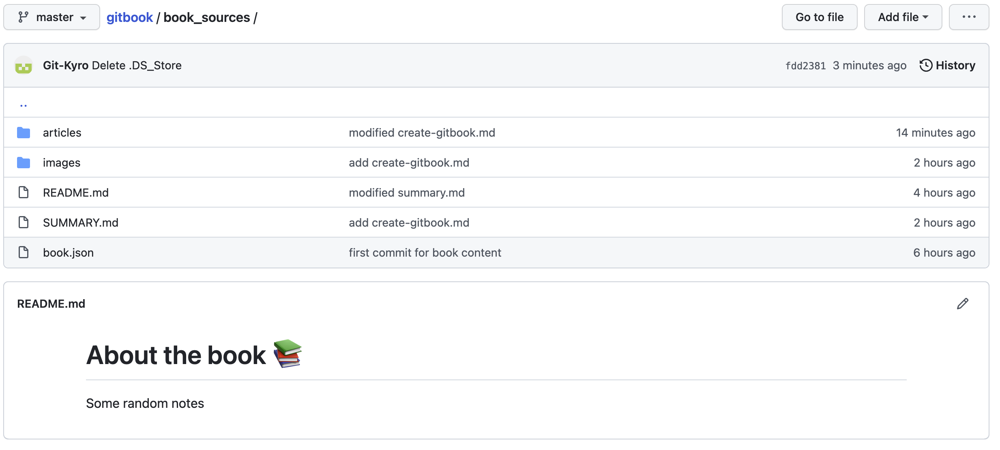
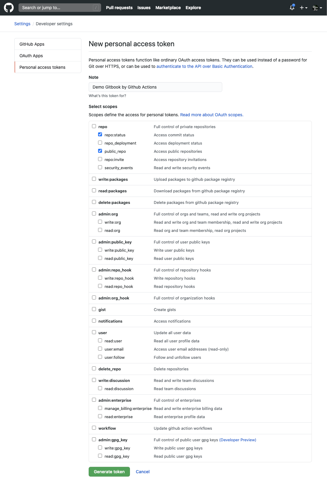
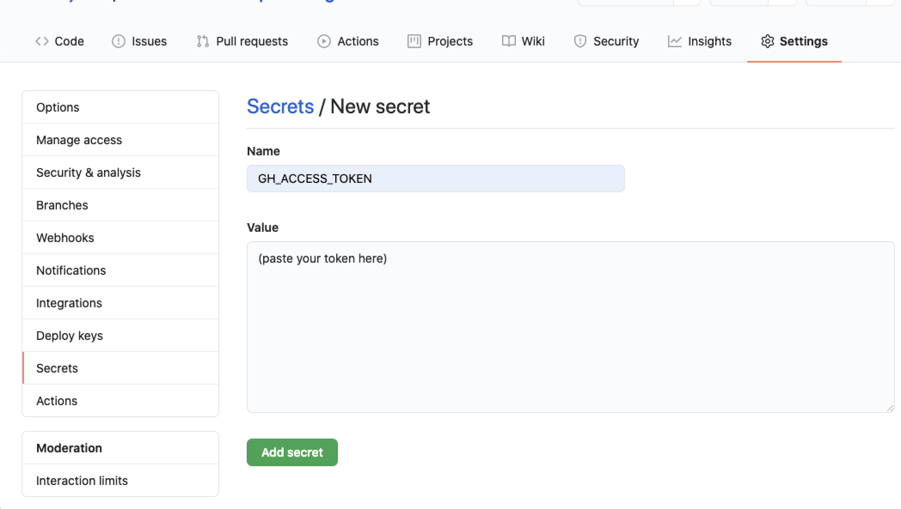
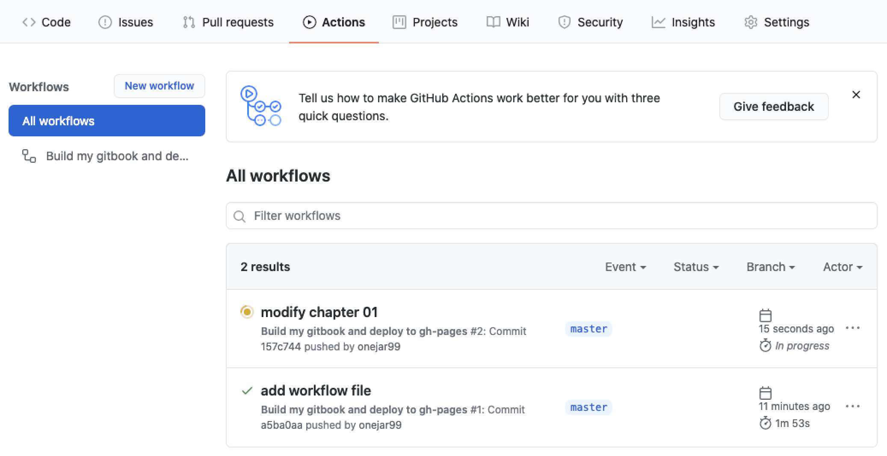

建立GitBook
利用 GiBook CLI + GitHub Pages + Github Actions 建立私人的GitBook，参考链接
GitBook CLI 新建电子书
安装 gitbook-cli 脚手架工具
npm install gitbook-cli
初始化 gitbook 项目
gitbook init
初始化完成后会自动生成 README.md 和 SUMMARY.md
构建 gitbook 静态文件
gitbook build
构建完成后会自动生成 _book/ 目录, 静态网站使用
在 GitHub 上新建一个名为 gitbook 的仓库，并克隆到本地，拷贝 gitbook 生成的文件到仓库,以下为目录结构的建议：
$ tree gitbook/
gitbook/
└── book_sources
├── README.md
├── SUMMARY.md
├── _book/
├── images
└── articles
├── chapter-01.md
└── chapter-02.md
PS:
把 GitBook 相關的檔案全部放在 book_sources 底下。
README.md 是必要檔案，會成為 Introduction 頁面。
SUMMARY.md 是必要檔案，會成為左邊的目錄。
建議設一個資料夾 articles 專門放置文章檔，可以讓檔案結構更好維護。
images 目录专门存放文档图片。
新增 book.json 文件，book.json 是 gitbook CLI 工具必要的文件
$ cat book_sources/book.json
{
"plugins": [ "anchor-navigation-ex", "edit-link", "copy-code-button", "theme-comscore", "ga" ],
"pluginsConfig": {
"fontSettings": {
"theme": "night",
"family": "sans"
},
"theme-default": {
"showLevel": false
},
"anchor-navigation-ex": {
"showLevel": false,
"associatedWithSummary": false,
"printLog": false,
"multipleH1": false,
"mode": "float",
"showGoTop":true,
"float": {
"floatIcon": "fa fa-navicon",
"showLevelIcon": false,
"level1Icon": "fa fa-hand-o-right",
"level2Icon": "fa fa-hand-o-right",
"level3Icon": "fa fa-hand-o-right"
},
"pageTop": {
"showLevelIcon": false,
"level1Icon": "fa fa-hand-o-right",
"level2Icon": "fa fa-hand-o-right",
"level3Icon": "fa fa-hand-o-right"
}
},
"edit-link": {
"base": "https://github.com/<你的 GitHub 帳號>/gitbook/edit/master/",
"label": "Edit This Page"
},
"ga": {
"token": ""
}
}
}
ps:
anchor-navigation-ex：支援 TOC 和「回到頂端」的功能。這個 Plugin 我覺得非常出色，有興趣客製化設定可以參考作者的教學文件。
copy-code-button：每個 Code Block 右上角會多一個 Copy 按鈕方便複製。
edit-link：頁面頂端會多一個「EDIT THIS PAGE」的連結，點下去會開啟 GitHub 的編輯頁面。連結的字眼可以自訂。
ga：Google Analytics，可以填入自己的 trace code
将所有文件 push 到 GitHub
$ echo -e "_book\nnode_modules" > .gitignore
# 將檔案推上 GitHub
$ git add .
$ git commit -m "first commit for book content"
$ git remote add origin git@github.com:<你的 GitHub 帳號>/gitbook.git
$ git push -u origin master

设置 GitHub Access Token
為了讓 GitHub Actions 能自動幫我們發佈 GitBook 成果到 GitHub Pages，必須授權 GitHub 操作我們的 Repository。作法就是設定 Access Token。
這裡都是在 GitHub 網頁上操作，按照以下步驟即可：
產生一個 GitHub Personal Access Token：
- 點右上角帳號的頭像 -> 選擇 Settings -> 左邊列表選擇最底下的 Developer settings -> 下個頁面的左邊列表選擇Personal access tokens。
- 點擊 Generate new token 按鈕。
- 輸入 Token 的描述，權限勾選 repo:status 和 public_repo 兩個項目。
- 點最下面的 Generate token 按鈕。
- 這時候頁面上會顯示一組 Token，複製下來。

到 Repository 將剛剛的 Token 設定成 Secret：
- 到想要自動發佈的 Repository -> 選擇 Settings -> 左邊列表選則 Secrets -> 點 New secret 按鈕。
- 「Name」欄位填 GH_ACCESS_TOKEN，「Value」欄位貼上剛剛複製的 Token。
- 點 Add secret 按鈕，設定就完成了。

添加 GitHub Actions Workglow
回到目录中，新增 build.yaml 文件
$ mkdir -p .github/workflows
$ vim .github/workflows/build.yml
只需要把 USER_NAME 和 USER_EMAIL 更换 GIT USER NAME 和 EMAIL:
name: Build my gitbook and deploy to gh-pages
on:
workflow_dispatch:
push:
branches:
- master
jobs:
build-and-deploy:
name: Build and deploy
runs-on: ubuntu-latest
env:
MY_SECRET : ${{secrets.GH_ACCESS_TOKEN}}
USER_NAME : <your_user_name>
USER_EMAIL : <your_email>
BOOK_DIR : book_sources
steps:
- name: Checkout 🛎️
uses: actions/checkout@v2.3.1
- name: Build and Deploy 🚀
uses: onejar99/gitbook-build-publish-action@v1.0.2
上面是一個 GitHub Actions 的設定檔，稱為一個「workflow」。 裡面用到官方的 checkout action，這幾乎是每個 workflow 的起手式。 另外用到我自己寫的一個 gitbook action，負責將 markdown 檔製成 GitBook 靜態網站， 並自動將網站檔案 commit 到 gh-pages branch.
将 Workflow push 到 GitHub， 触发自动发布到 GitHub Pages
$ git add .github/workflows/build.yml
$ git commit -m "add workflow file"
$ git push
回到 GitHub Repository 页面， 点[Actions], 会看到有一个 workflow 任务被自动触发执行中。

等执行完成后，会看到自动建立了 gh-pages branch 并 commit GitBook 静态网站

访问 GitBook：https://<你的 GitHub 帳號>.github.io/gitbook。
编辑书籍内容， 测试 GitBook 自动发布更新
$ vim book_sources/articles/chapter-01.md
$ git add -u .
$ git commit -m "modify chapter 01"
$ git push
